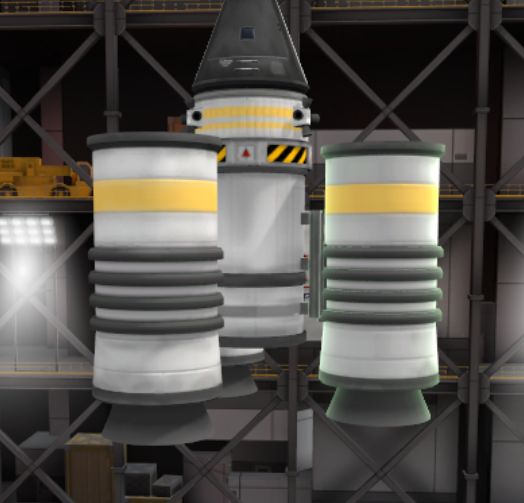
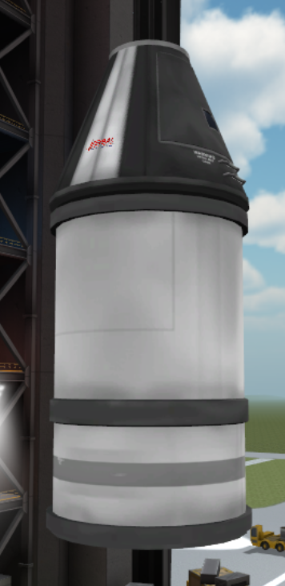
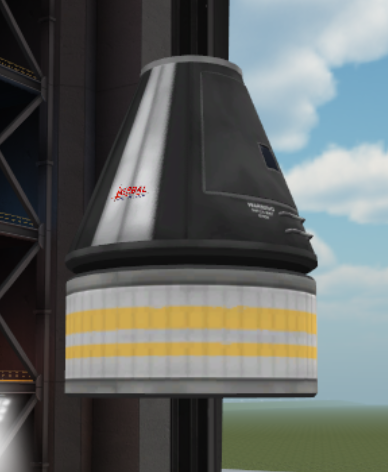
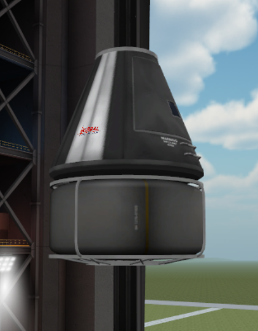

Welcome to Kerbal Space Program!
This guide will help you learn how to build a rocket, manage your space agency, and get into orbit.
Section 1: Introductions
Kerbal Space Program is a game built on the idea of "failing upward". Your rockets will explode, your astronauts will be stranded, and missions will fail. But each failure is a learning experience. This guide is here to assist you in understanding how this game works, how to fail correctly, and how to learn from everything that you do. This section will introduce you to the basic mechanics of the game and get you on the path to the stars.
Building Your First Rocket
Types of Rocket Parts
- Command Modules: These are the brain of the rocket. Whether or not it is a smart brain is really up to you. Command modules can be broadly put into two sub-categories: Manned and unmanned. Manned command modules need a certain number of astronauts inside them to operate. Without an astronaut in the command module, the player cannot control the rocket at all. Unmanned modules do not contain astronauts, and instead use electricity to control the rocket. No electricity, no control. Each of these options has pros and cons, but in the beginning you will only have access to manned modules.
- Fuel Tanks: Fuel is arguably the most important resource you have. Without fuel you cannot go anywhere, and in some cases you cannot make navigational adjustments. There are four types of fuel that you can use, but only three of them are accessible in this menu:
- Solid Fuel: Solid fuel is only found in solid fuel boosters and is not found in this menu. What makes it different is that once you have activated a solid fuel booster, you cannot turn it off. The fuel burns at 100% burn until there is no more to burn.
- Liquid Fuel: Liquid fuel is the most common type of fuel you will be working with. Liquid fuel can be throttled as necessary so it is used for mid-to-late stages of your flight for more fine points of navigation. Liquid fuel comes in two parts: liquid fuel and oxidizer. These two resources burn at a proportional rate, and each fuel tank has the correct ratios of fuel to oxidizer, so it is rarely a consideration, but if for some reason your rocket stops moving despite having some fuel left it may have to do with a lack of oxidizer.
- Monopropellant: Monopropellant is liquid fuel without oxidizer and is used as fuel for Reaction Control System (RCS) thrusters.
- Xenon Gas: Xenon gas tanks are used to fuel ion engines.
- Engines: As easy as it can be to consider engines as the workhorse of rockets with little variation (we want the biggest engines to make the rocket go fast, right?), there are many nuances to engines, with many different types of engines, all with differing capabilities. Each engine utilizes one of the fuel types as discussed above, and each of these engine types has pros and cons as well and some general archetypes of use.
- Solid Fuel Booster: Due to the high power of a solid fuel booster and the fact that it cannot be turned off until no fuel is left, solid fuel boosters are most often used to begin a flight. They create incredible amounts of lift and acceleration and create a solid (haha) foundation for the remainder of the flight. Often a solid fuel booster is paired with a decoupler to allow for it to be easily jettisoned once it has been used up.
- Liquid Fuel Booster: As noted in the section on liquid fuel tanks, the key component of liquid fuel is that it can be throttled. Liquid fuel engines allow for much more precision at the cost of power. A liquid engine set to max will not give the same level of acceleration as a solid fuel engine, but once a high velocity has been established, the liquid fuel engine will easily be able to maintain that velocity.
- RCS Thruster: Reaction Control System thrusters are small, radial-mounted thrusters designed to use a small boost to help turn the ship. These thrusters use monopropellant to generate small thrusts that assist you in turning or rotating your ship.
- Ion Engines: Ion engines are small and run on either xenon gas or electricity. Because they can run on electricity many ion engines are used in space probes or in rockets that will have to be in space for a long time where being able to refuel with solar power allows for near endless usage. Ion engines are weak, though, especially in atmospheric conditions and it is almost impossible to launch a rocket with only an ion engine.
- Command and Control: Command and control is all about the parts that help your steer your rocket.
- Structural:
- Aerodynamics:
- Utility:
- Science:
| Solid Fuel | Liquid Fuel | Monopropellant | Xenon Gas |
|---|---|---|---|
|  |  |  |  |